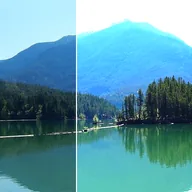

Pozlama

Durak, ofset ve gama düzeltmesiyle fotoğrafik pozlamayı simüle eder. Saydam Kısımları Aydınlat, bulanık bir kenar gibi kısmen saydam piksellerin beyazın ötesinde aydınlanmasını sağlar.
Pozlama (Stops) görüntüyü bir kameranın yaptığı gibi aydınlatır veya karartır: bir durak ışığı iki katına çıkarır veya yarıya indirir ve -4 ile 4 arasında değişir. Ofset her şeyi eşit şekilde yükseltir veya düşürür, Gama ise orta tonları değiştirir.
Ayarlar
| Ayar | Tür | Aralık | Varsayılan |
|---|---|---|---|
| Durak | Sayı | -4 – 4 | 0.7 |
| Ofset | Sayı | -0.5 – 0.5 | 0 |
| Gama | Sayı | 0.1 – 10 | 1 |
| Saydam Kısımları Aydınlat | Açık veya kapalı | – | Kapalı |